Handoff · app Victa · iOS e Android
Splash animada
e ícones do app
Tudo o que o time de produto precisa para colocar a abertura do app no ar: a animação nos aparelhos, como ela foi montada, como implementar, os ícones de cada plataforma e o arquivo Lottie.
Use as setas do teclado ou a barra de baixo para navegar.
01 · Splash screen
A abertura, como o usuário vê
2,8 segundos: o contorno do V é desenhado, o V é preenchido e o logotipo completo se forma. As duas telas tocam em sincronia, no tamanho real de cada plataforma.
Como usar esta tela
- Tocar / pausar — ou aperte Espaço.
- Arraste a barra para ver qualquer instante; as faixas coloridas embaixo são as fases. Clique numa fase para pular até ela.
- 0,5× e 0,25× deixam conferir as curvas de easing com calma.
Repare no começo: o frame 0 é só o verde #42CF00. É exatamente o que a splash nativa do sistema mostra — por isso a passagem do sistema para a animação não tem corte.
02 · Splash screen
Cinco fases, uma linha do tempo
Clique numa fase para tocá-la em loop. Na linha do tempo, cada barra é uma propriedade animada e cada ponto é um keyframe — clique em qualquer lugar dela para posicionar a agulha.
03 · Splash screen
Como implementar
A splash tem duas camadas: a nativa, que o sistema mostra enquanto o app abre (só a cor), e a animada, um Lottie centralizado por cima. A troca entre elas é invisível porque as duas começam iguais.
-
1
Splash nativa
Fundo
#42CF00, sem logotipo. iOS: LaunchScreen com a cor sólida. Android 12+:windowSplashScreenBackgrounde um ícone transparente.surface-brand · #42CF00 -
2
Lottie por cima
Uma view de 400 × 400 pt centralizada na tela, tocando uma vez. O arquivo tem fundo transparente: a cor continua vindo do nativo.
marca · #00512Aanel · #C5F167 -
3
Entrada no app
No fim da animação (2,8 s), faça um fade de ~250 ms para a primeira tela. Se o app ainda estiver carregando, segure no último frame — o logotipo completo.
// app.json — splash nativa: só a cor
["expo-splash-screen", {
"backgroundColor": "#42CF00",
"image": "./assets/transparente.png"
}]
// Splash.tsx — Lottie por cima
import LottieView from 'lottie-react-native';
import * as SplashScreen from 'expo-splash-screen';
SplashScreen.preventAutoHideAsync();
export function Splash({ onFinish }) {
return (
<View style={{ flex: 1, backgroundColor: '#42CF00',
alignItems: 'center', justifyContent: 'center' }}>
<LottieView
source={require('./assets/victa-splash.json')}
style={{ width: 400, height: 400 }}
autoPlay
loop={false}
onLayout={() => SplashScreen.hideAsync()}
onAnimationFinish={onFinish}
/>
</View>
);
}// LaunchScreen.storyboard: view com fundo #42CF00, sem imagem.
import Lottie
let splash = LottieAnimationView(name: "victa-splash")
splash.frame = CGRect(x: 0, y: 0, width: 400, height: 400)
splash.center = view.center
splash.contentMode = .scaleAspectFit
splash.loopMode = .playOnce
view.backgroundColor = UIColor(red: 66/255, green: 207/255, blue: 0, alpha: 1)
view.addSubview(splash)
if UIAccessibility.isReduceMotionEnabled {
splash.currentProgress = 1 // mostra o logotipo pronto
showHome()
} else {
splash.play { _ in self.showHome() }
}<!-- res/values/themes.xml — splash do sistema (Android 12+) -->
<item name="windowSplashScreenBackground">#42CF00</item>
<item name="windowSplashScreenAnimatedIcon">@drawable/transparente</item>
// SplashScreen.kt — Jetpack Compose + lottie-compose
val composition by rememberLottieComposition(
LottieCompositionSpec.RawRes(R.raw.victa_splash)
)
val progress by animateLottieCompositionAsState(composition, iterations = 1)
Box(
Modifier.fillMaxSize().background(Color(0xFF42CF00)),
contentAlignment = Alignment.Center
) {
LottieAnimation(composition, { progress }, Modifier.size(400.dp))
}
LaunchedEffect(progress) { if (progress == 1f) onFinish() }Faça
- Use a mesma cor na splash nativa e no fundo da tela do Lottie.
- Mantenha o Lottie em 400 × 400 pt, centralizado, sem esticar (aspect fit).
- Toque uma vez só. Sem loop.
- Com Reduzir movimento ligado, mostre direto o último frame.
Evite
- Logotipo na splash nativa: ele “pisca” quando o Lottie começa.
- GIF ou MP4 no lugar do Lottie: pesa mais e perde nitidez.
- Segurar a splash além do necessário só para a animação “caber”.
- Trocar as cores no código — elas vêm dos tokens do design system.
04 · Ícones do app
iOS: quatro aparências
O iOS escolhe a versão do ícone conforme a aparência da tela de início do usuário. Clique numa variante para ver como ela fica no aparelho.
Na entrega: PNG 1024 × 1024, quadrado e sem cantos arredondados, sem transparência no Padrão. O iOS aplica a máscara de cantos sozinho.
05 · Ícones do app
Android: ícone adaptável
No Android o ícone é montado pelo sistema a partir de duas camadas. Cada fabricante recorta com um formato diferente — por isso o V precisa caber na zona segura.

Na entrega: fundo e frente separados, 108 × 108 dp (512 × 512 px no template). O V fica dentro do círculo central de 66 dp; o resto pode ser cortado.
06 · Formato
Por que Lottie
Lottie é um formato de animação em JSON: em vez de pixels, o arquivo descreve formas vetoriais e keyframes. O app desenha a animação na hora, com uma biblioteca nativa — não é vídeo nem GIF.
- Leve
- A splash inteira tem ~12 KB. Um MP4 equivalente passaria fácil de 300 KB.
- Nítido
- Vetor: fica perfeito em qualquer densidade de tela, do Android de entrada ao iPhone Pro Max.
- Um arquivo
- O mesmo JSON roda em iOS, Android, React Native e web.
- Controlável
- O código pode pausar, pular para um frame, mudar a velocidade e saber quando a animação acabou.
Como este arquivo foi feito
Sem After Effects: a animação mora em src/timeline.js (keyframes e curvas) e o script build-lottie.js gera o JSON. Os celulares desta apresentação são desenhados pela mesma timeline — o que você vê aqui é o que vai no app.
Usa só recursos que todas as bibliotecas suportam: formas, trim path, opacidade, posição e escala. Sem fontes, imagens ou efeitos.
Bibliotecas: lottie-ios, lottie-android, lottie-react-native e lottie-web. Para conferir o arquivo sem código, arraste o JSON no preview do LottieFiles.
Para tocar o JSON aqui, abra a apresentação pelo servidor local: node scripts/serve.js
07 · Entrega
Arquivos
Tudo o que vai para o app. Clique para baixar.
Ícone iOS


Atenção: no Figma, o android-icon-monochrome tem fundo verde. O Android usa essa camada só como máscara — com fundo, o ícone temático vira um quadrado liso. Exporte o monocromático só com o V.